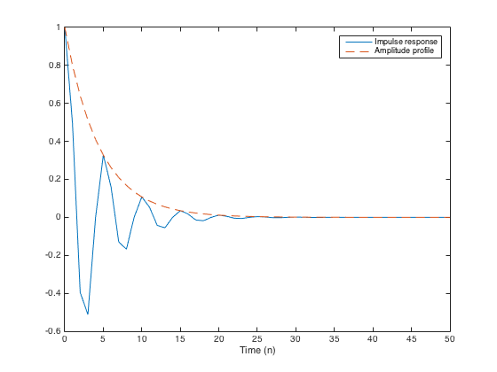
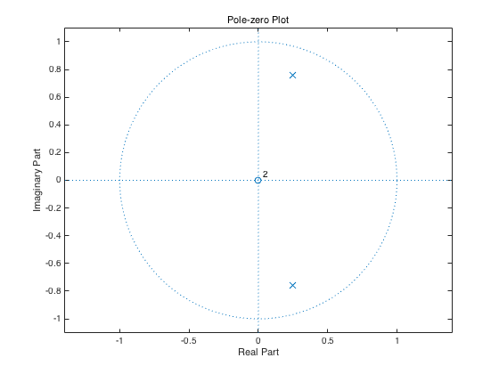
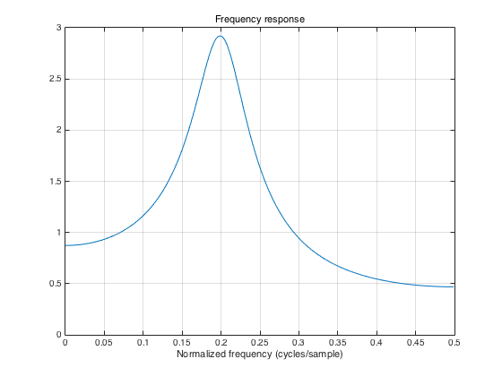
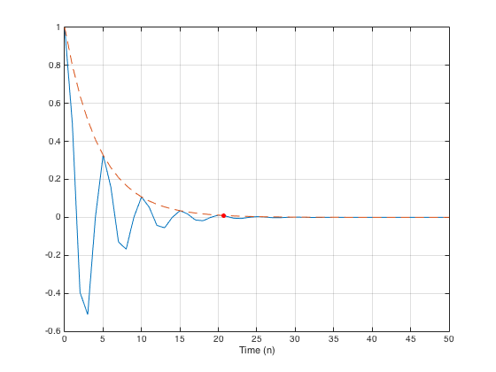
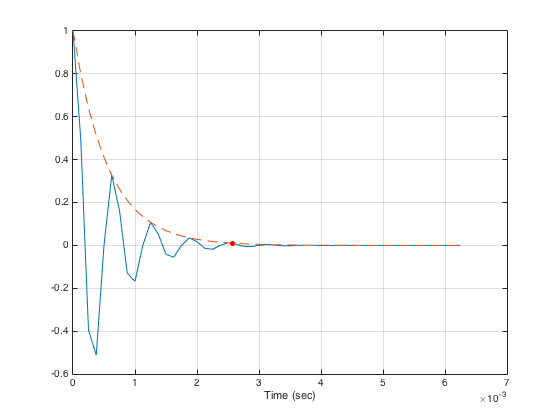
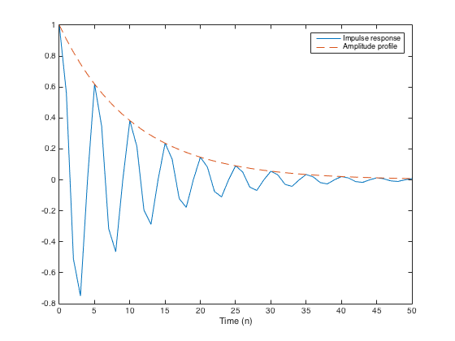
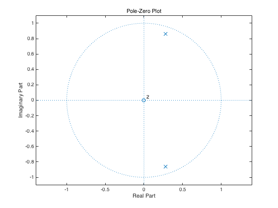
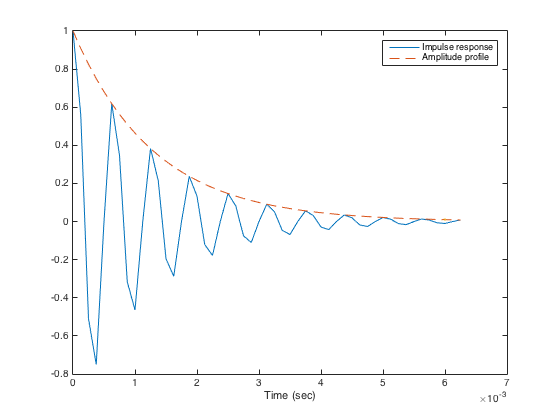
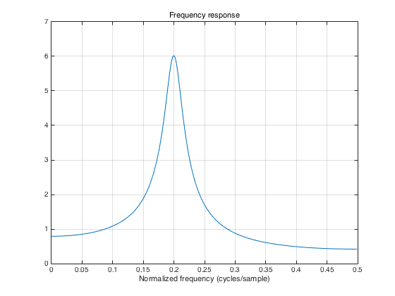

makefilter_01.m
The filter is implemented using a second-order recursive difference equation
Contents
clear
Difference equation
y(n) = b0 x(n) - a1 y(n-1) - a2 y(n-2)
f1 = 0.2; % normalized frequency (cycle/sample) om1 = 2*pi * f1; % normalized fequenccy (radian/sample) r = 0.8; % Pole radius a1 = -2*r*cos(om1); a2 = r^2; a = [1 a1 a2]; % recursive part b = 1; % non-recursive part
Impulse response
Note that the amplitude profile has the form E(n) = r^n.
N = 50; n = 0:N; imp = [1 zeros(1, N)]; h = filter(b, a, imp); figure(1) clf plot(n, h, n, r.^n, '--') legend('Impulse response', 'Amplitude profile') xlabel('Time (n)')
Pole-zero plot
Note that the poles are at z = r exp(om1 j) and z = r exp(-om1 j)
zplane(b, a)
title('Pole-zero Plot')
 Frequency response
Note that the frequency response has a peak at f1
[H, om] = freqz(b, a); f = om / (2*pi); plot(f, abs(H)) title('Frequency response') xlabel('Normalized frequency (cycles/sample)') grid
How long (Na) till 1% amplitude?
When does the impulse response decay down to 1% of its initial value?
Na = log(0.01) / log(r) % in samples plot(n, h, n, r.^n, '--', Na, 0.01, 'r.', 'markersize', 18) xlabel('Time (n)') grid
Na = 20.6377
Express in seconds (Ta)
If this filter is operating at 8000 samples/second, then when does the impulse response decay down to 1% as expressed in seconds?
Fs = 8000 % samples/second Ta = Na / Fs plot(n/Fs, h, n/Fs, r.^n, '--', Ta, 0.01, 'r.', 'markersize', 18) xlabel('Time (sec)') grid
Fs =
8000
Ta =
0.0026
 Design system with specified Ta
Let us make a system that has Ta = 0.006 seconds. What should the pole radius be?
Ta = 0.006; Na = Ta * Fs; r = 0.01^(1/Na)
r =
0.9085
Make the filter
difference equation
a = [1 -2*r*cos(om1) r^2]; b = 1;
Impulse response
h = filter(b, a, imp); plot(n, h, n, r.^n, '--') legend('Impulse response', 'Amplitude profile') xlabel('Time (n)')
Pole-zero diagram
zplane(b, a)
title('Pole-Zero Plot')
 plot(n/Fs, h, n/Fs, r.^n, '--', Ta, 0.01, '.') legend('Impulse response', 'Amplitude profile') xlabel('Time (sec)')
Frequency response
[H, om] = freqz(b, a); f = om / (2*pi); plot(f, abs(H)) title('Frequency response') xlabel('Normalized frequency (cycles/sample)') grid